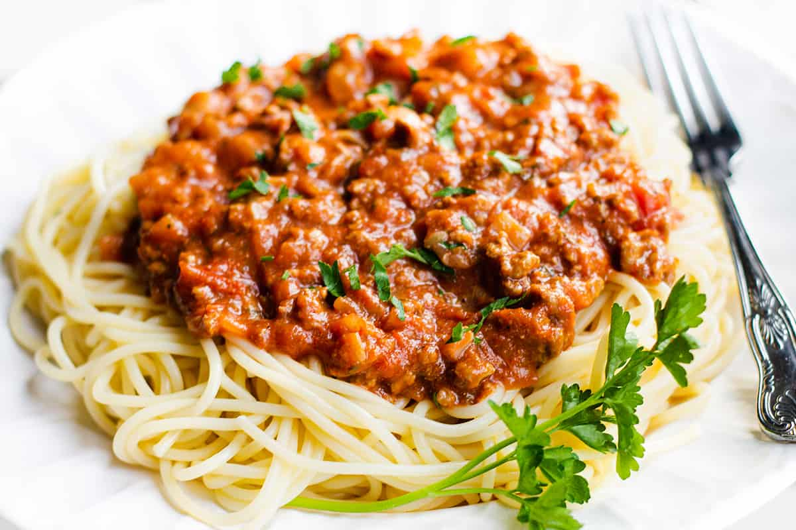

Spaghetti Bolognese

Description
Our best ever spaghetti bolognese is super easy and a true Italian classic with a meaty, chilli sauce. This recipe comes courtesy of BBC Good Food user Andrew Balmer
Ingredients
- Onions
- Carrots
- Garlic
- Spaghetti
- Beef Mince
- Tomato Puree
- Cheese
Steps
- Put a large saucepan on a medium heat and add 1 tbsp olive oil.
- Add 4 finely chopped bacon rashers and fry for 10 mins until golden and crisp.
- Reduce the heat and add the 2 onions, 2 carrots, 2 celery sticks, 2 garlic cloves and the leaves from 2-3 sprigs rosemary, all finely chopped, then fry for 10 mins. Stir the veg often until it softens.
- Increase the heat to medium-high, add 500g beef mince and cook stirring for 3-4 mins until the meat is browned all over.